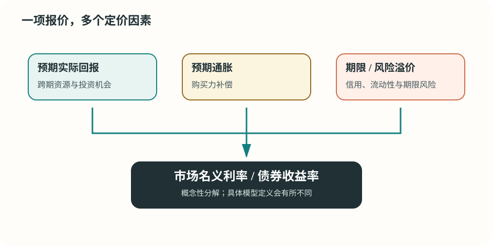

货币银行学 · 第 06 章
利息从何而来？利率如何形成？
从一笔跨期借贷出发，区分名义利率与实际利率，比较古典储蓄—投资理论、凯恩斯流动性偏好与可贷资金框架，并理解中国利率市场化后的定价链条。
今天借出 10 万元，一年后收回 10.3 万元，名义上多了 3,000 元。但如果这一年物价上涨 4%，这笔钱能买到的商品反而变少。利率因此不是一个脱离时间和购买力的百分数：它是把今天的资金与未来偿付连接起来的价格，也是一组关于通胀、风险、期限和流动性的信号。
利率是一种跨期价格
利息是资金提供者在约定期间内取得的报酬；利率是利息相对于本金、期限和计息规则的比例。借款人获得今天的购买力，承担未来还本付息的义务；出借人放弃当前使用资金的机会，换取未来现金流。双方交易的不是“时间本身”，而是在不确定条件下对资金使用权、偿付承诺和风险的定价。
利率至少承担四种经济功能：协调储蓄与投资的跨期选择；把借款人信用风险反映到融资成本；补偿期限和流动性差异；传递货币政策与宏观预期。不同金融产品的利率因此不会只有一个“市场利率”：隔夜回购、住房贷款、企业债券和长期国债分别对应不同期限、风险、抵押品和交易制度。

利息、利率与总融资成本不是同一个概念
一笔贷款的利息支出取决于本金余额、利率、计息天数和计息基准。实际融资成本还可能包括手续费、担保费、承诺费、提前还款条款和浮动利率重定价风险。比较两笔贷款时，不能只比较广告中的名义年利率，还要核对期限、费用、还款方式和利率是否固定。
名义利率、实际利率与费雪方程
名义利率是合同或市场报价中直接观察到的利率；实际利率则扣除了物价变化对购买力的影响。借款人和出借人在签约时面对的是未来通胀，因此决策相关的是事前实际利率（ex ante real rate），而不是事后用已实现通胀计算出来的实际利率。
精确费雪关系：(i) 为名义利率，(r) 为事前实际利率，(pi^e) 为同期预期通胀率。
当利率和通胀率都不高时，常用近似式 r ≈ i − πᵉ。例如，一年期名义利率为 3%，预期通胀率为 2%，精确事前实际利率约为 0.98%（1.03 除以 1.02 再减 1），近似结果为 1%。近似值方便心算，但高通胀或大幅利率变动时应使用精确式。
如果一年后实际通胀率是 4%，事后实际回报约为 -0.96%（1.03 除以 1.04 再减 1）。这并不说明签约时的实际利率就是负值，而是说明实际通胀与原先预期不同。把事后通胀直接代入事前决策，是利率分析中常见的时间错配。
费雪效应不是“名义利率减 CPI 就是所有人的真实融资成本”。应尽量匹配预期通胀的期限、借贷现金流的期限和借款人面对的价格指数。家庭、企业和政府的实际现金流风险并不相同。
三种利率决定框架
古典储蓄—投资框架
在简化的可贷资金市场中，家庭储蓄构成资金供给，企业投资构成资金需求。利率上升通常提高储蓄意愿、抑制部分投资需求；两者相交处给出模型中的均衡实际利率。这个框架强调跨期资源配置，但若把收入固定、金融摩擦忽略，就难以解释需求不足、信贷配给和短期货币冲击。
凯恩斯流动性偏好
凯恩斯把利率与持有流动性资产的机会成本联系起来。公众持有货币的动机可归纳为交易、预防和投机需求；在给定收入与预期下，货币供给和流动性偏好共同影响利率。该框架突出货币需求、资产选择和预期，但不能把它误读成利率永远只由央行“给出的货币数量”决定。
可贷资金与现代金融市场
可贷资金框架把储蓄、投资、财政融资、银行信用和其他资金流纳入同一市场；现代宏观金融分析还会区分政策利率、无风险期限利率、信用利差和风险溢价。银行资产负债表、抵押品约束、风险承受能力和市场流动性，会让同一政策利率传导到不同借款人时产生不同结果。
| 框架 | 主要观察对象 | 最适合解释 | 不能单独回答 |
|---|---|---|---|
| 储蓄—投资 | 跨期资源供求 | 长期实际利率与投资决策 | 短期货币市场波动和信贷配给 |
| 流动性偏好 | 货币需求、流动性和预期 | 资产组合选择与流动性冲击 | 全部期限和风险结构 |
| 可贷资金 / 现代框架 | 多部门资金流、银行信用与风险价格 | 政策利率向不同融资成本的传导 | 不经数据识别就确定因果方向 |
报价利率里包含哪些补偿
一笔公司债收益率通常高于同期限高信用主权债，不一定是因为市场预期政策利率更高，而可能是投资者要求信用违约补偿、流动性补偿、税收补偿或期权风险补偿。长期债券的收益率还可能包含期限溢价：投资者承担未来短期利率不确定性，要求额外回报。
分析时可用一个概念性分解：名义收益率 ≈ 预期实际短期利率路径 + 预期通胀 + 期限溢价 + 信用 / 流动性等产品特定溢价。不同模型对各项的定义不同，分解结果也依赖模型假设，不能把它当成可以直接从报价中逐项读取的恒等式。
中国利率如何形成与传导
中国利率市场化改革是渐进推进的。2019 年 8 月，人民银行深化贷款市场报价利率（LPR）改革，报价机制以报价行对最优质客户贷款利率的报价为基础，按规则计算并定期公布；金融机构根据客户信用、期限、担保和资金成本确定实际贷款利率。人民银行的货币政策执行报告也说明，贷款利率由金融机构自主确定，LPR 是浮动利率贷款的重要定价参考[1]。
理解传导时要区分几个层次：央行公开市场操作利率表达政策操作信号；银行间回购和拆借利率反映短期资金供求；国债收益率曲线体现市场对未来短端利率、通胀和期限溢价的定价；LPR 与银行贷款报价再结合客户风险和合同条款影响企业、家庭融资成本。它们有关联，但并非每个利率都由某一个利率机械加减得到。
例如，政策利率下降时，如果银行负债成本下降、风险偏好改善、合格借款需求增加，贷款报价可能随之下降；但如果借款人信用恶化、银行资本约束趋紧或风险溢价上升，某些客户的实际融资成本未必同步下降。利率传导需要看“基准价格”和“风险加点”两部分。
交互练习：计算实际利率
输入名义年利率和同期预期通胀率。计算器同时给出精确费雪结果与低利率近似值，帮助观察两者差异。
精确实际利率约 0.98%；近似值 1.00%。
核心结论
利率是跨期资金使用权的价格。读懂一个利率，需要同时识别名义与实际、事前与事后、期限与信用风险，以及政策利率向市场利率和贷款利率传导时的摩擦。任何单一理论都只照亮其中一部分，分析结论必须与现金流期限和风险结构相匹配。
参考资料
- 中国人民银行，2024 年第二季度中国货币政策执行报告，利率市场化与 LPR 改革部分。
- Federal Reserve Bank of St. Louis, The Ups and Downs of Inflation and the Role of Fed Credibility，费雪方程与预期通胀。
- Bank of England, About a rate of (general) interest: how monetary policy transmits，实际利率与政策传导。
- Irving Fisher, The Theory of Interest（1930）相关引文与费雪效应研究。